A papírhajtogatás művészete
Az origami japán szó, két részből áll: az ori jelentése hajtogatni, a kami jelentése papír. Az origami tehát a papírhajtogatás művészete, amelynek során egyetlen papírlapból, vágás és ragasztás nélkül készítünk figurákat.
A papírt Kínában találták fel, Japánba a 6. század környékén jutott el. Eleinte nagyon drága volt, ezért a hajtogatott papírt főleg vallási szertartásokon és ünnepi ajándékok díszítésére használták. Később a hajtogatás a mindennapok része, a gyerekek kedvelt időtöltése lett.
A modern origami egyik legismertebb alakja Josizava Akira japán mester volt, aki több ezer modellt alkotott, és kidolgozta a hajtogatási ábrák ma is használt jelrendszerét. Ennek köszönhetően a modellek leírása nyelvtől függetlenül, a világ bármely pontján érthetővé vált.
Vissza az oldal tetejére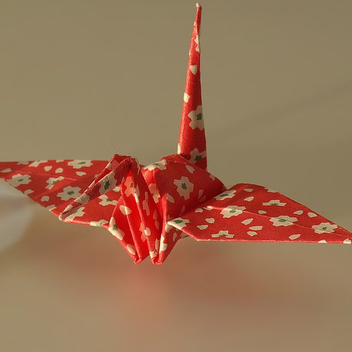
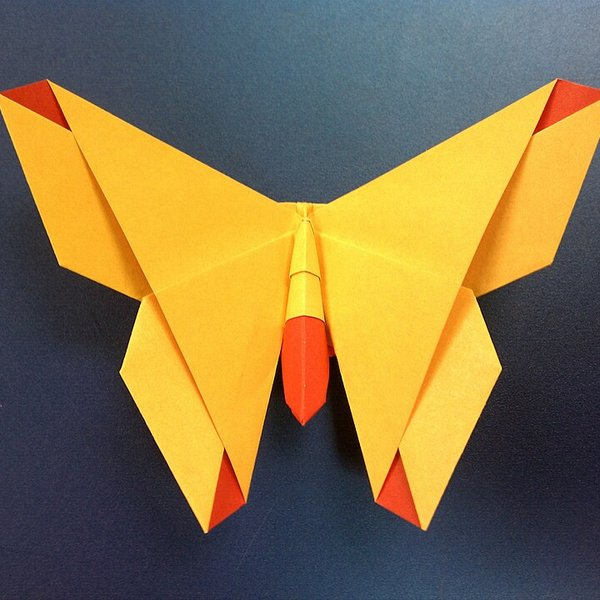
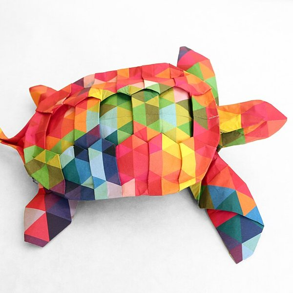
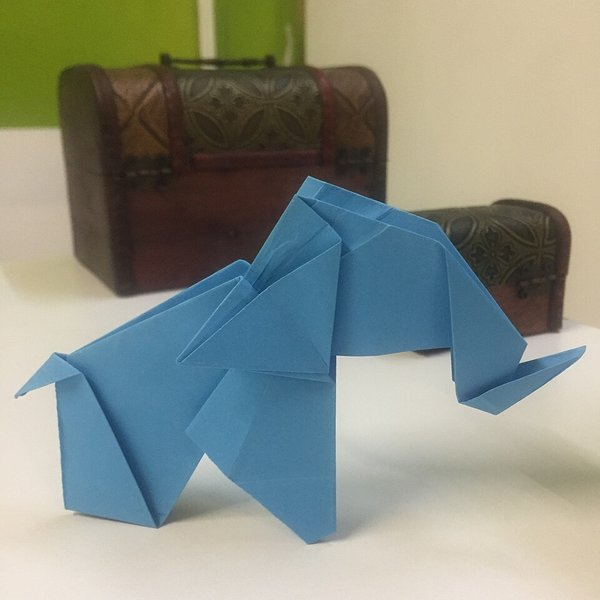
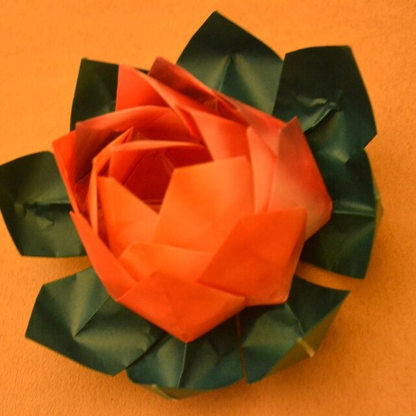
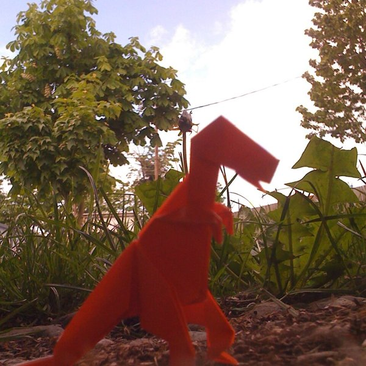
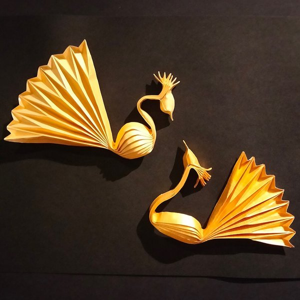
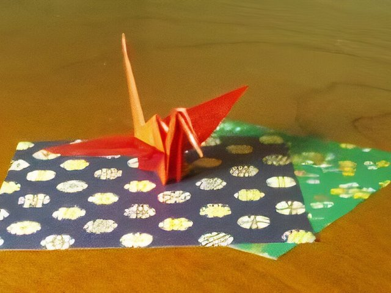
Egyetlen négyzet alakú papírlapból, vágás és ragasztás nélkül készül. Ide tartozik a leghíresebb modell, a daru is, amely Japánban a hosszú élet és a béke jelképe.
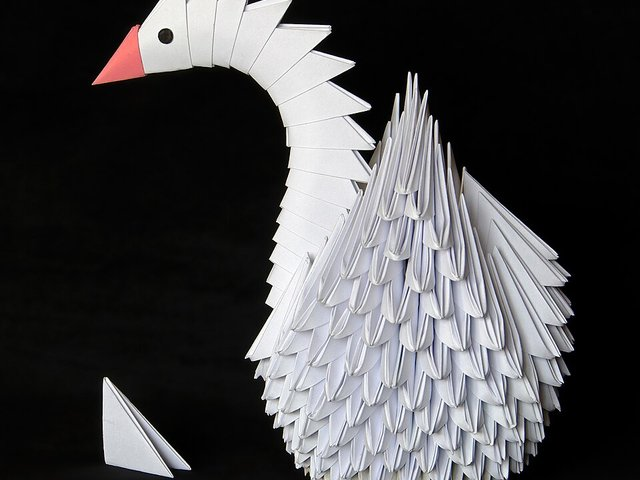
Sok egyforma, kis elemből (modulból) épül fel, amelyeket egymásba illesztenek. Így készülnek a látványos térbeli gömbök, csillagok és a népszerű hattyúk.
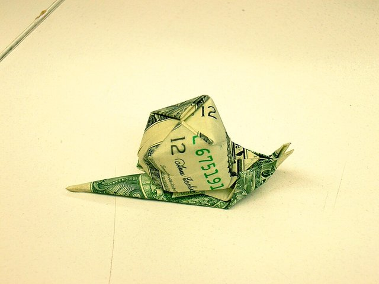
Papírpénzből, leggyakrabban bankjegyből hajtogatott figurák. A bankjegy téglalap alakja miatt külön modelleket terveztek hozzá. Kedvelt ajándék születésnapra, esküvőre.
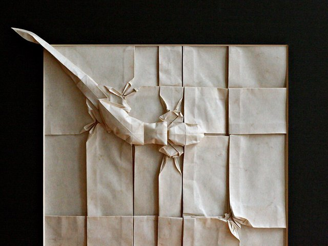
Rendkívül részletes modellek, amelyek gyakran több száz lépésből állnak. Megtervezésükhöz a hajtogatók matematikai módszereket és számítógépes programokat is használnak.
Origamihoz szinte bármilyen papír használható, de a jó papír megkönnyíti a munkát. Az alábbi táblázat a leggyakoribb papírtípusokat mutatja be.
| Papír típusa | Vastagság | Jellemzői | Ajánlott |
| Kami | vékony | olcsó, egyik oldala színes, könnyen hajtható | kezdőknek, egyszerű modellekhez |
| Washi | vékony | hagyományos japán papír, hosszú rostjai miatt erős | díszes, hagyományos modellekhez |
| Fóliapapír | vékony | fémfólia és papír rétegei, jól tartja a formát | sok lépéses, részletes modellekhez |
| Tant | közepes | mindkét oldala színes, enyhén érdes | moduláris origamihoz |
| Elefántbőr | vastag | nagyon erős, nedvesítve formázható | állatfigurákhoz, nedves hajtogatáshoz |
| Kezdőknek 15x15 cm-es kami papír ajánlott. |
A képek forrása: Wikimedia Commons (részletek: img/forrasok.txt)
Készítette: Név - osztály